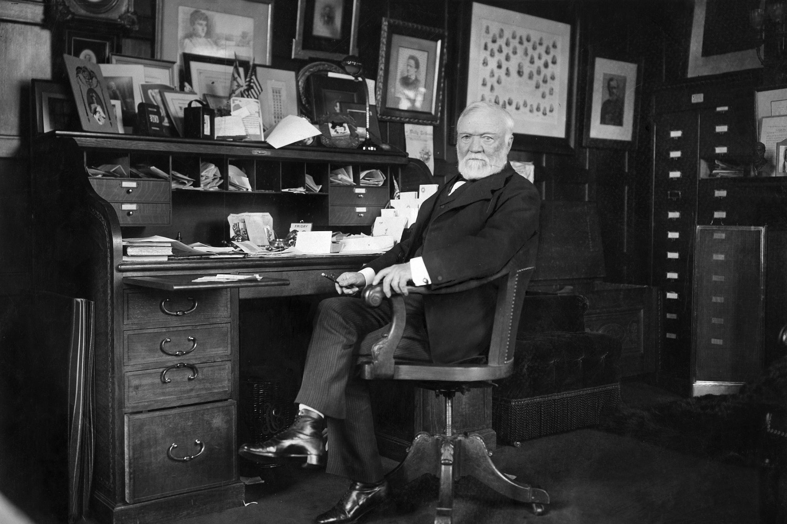

Andrew Carnegie
The most philanthropic person in the world

November 25, 1835 – August 11, 1919) was a Scottish-American industrialist and philanthropist. Carnegie led the expansion of the American steel industry in the late 19th century and became one of the richest Americans in history. He became a leading philanthropist in the United States and in the British Empire
Here's a time line of Andrew Carnegie
- 1835 - Andrew is born in Dunfermline, Scotland, to Margaret and Will Carnegie. Will Carnegie is a skilled weaver, and the Carnegies are one of many working-class families in Dunfermline. A younger son, Tom, is born in 1843.
- 1847 - After steam-powered looms are introduced in Dunfermline, hundreds of hand loom workers are unemployed, including Andrew's father Will.
- 1848 - The Carnegies settle in Pittsburgh, and Andrew begins work as a bobbin boy in a textile mill, earning $1.20 per week. He later takes a job in a factory tending the steam engine and boiler, for $2.00 per week. He impresses his supervisor with his penmanship and is offered the chance to work as a clerk for the factory.
- 1898 - Carnegie tries to gain independence for the Philippines Following the Spanish-American War, the United States captures the Philippines from Spain. The US decides to pay Spain $20 million to purchase the islands. Carnegie sees this move as imperialist and offers the islands $20 million to purchase their independence.
- 1901 - Carnegie sells out to Morgan, Carnegie allows J.P. Morgan to buy him out for $480 million, a move which allows Morgan to create US Steel, and makes Carnegie the richest man in the world.
- 1901 - Carnegie donates money to advance the cause of peace Carnegie establishes the Carnegie Endowment for International Peace, and builds the Central American Court of Justice in Costa Rica, which is destroyed by an earthquake later that year.
- 1911 - Carnegie establishes the Carnegie Corporation with his remaining money, about $125,000,000. He intends that the corporation will aid colleges, universities, technical schools, and scientific research. This is the last philanthropic trust Carnegie creates-- in all, he has given away 90% of his fortune
- 1913 - The Palace, or Temple, of Peace in the Hague, which was financed by Carnegie, has its grand opening.
- 1919 - Carnegie dies at Shadowbrook,Died in Lenox, Massachusetts, 11 August 1919
"Teamwork is the ability to work together toward a common vision. The ability to direct individual accomplishments toward organizational objectives. It is the fuel that allows common people to attain uncommon results."
-- Andrew Carnegie